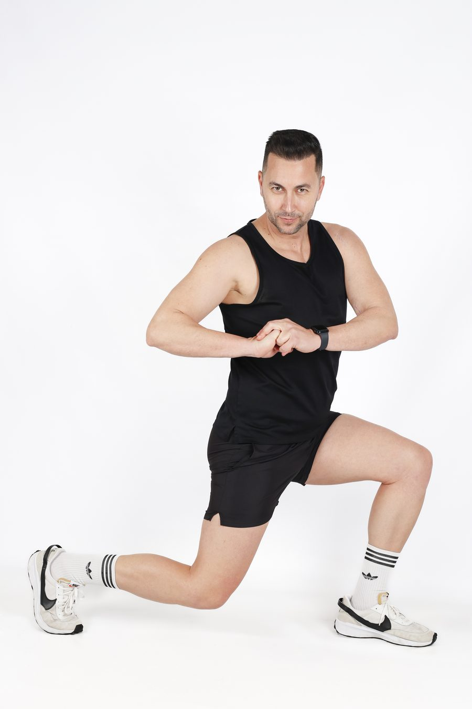

Programa Premium 1:1 · 12–16 semanas
Recomposición
corporal basada en
fisiología real.
Para profesionales de 35 a 55 años que quieren resultados serios. Sin dramatismos hormonales, sin atajos, sin plantillas. Estrategia individual basada en evidencia científica.
